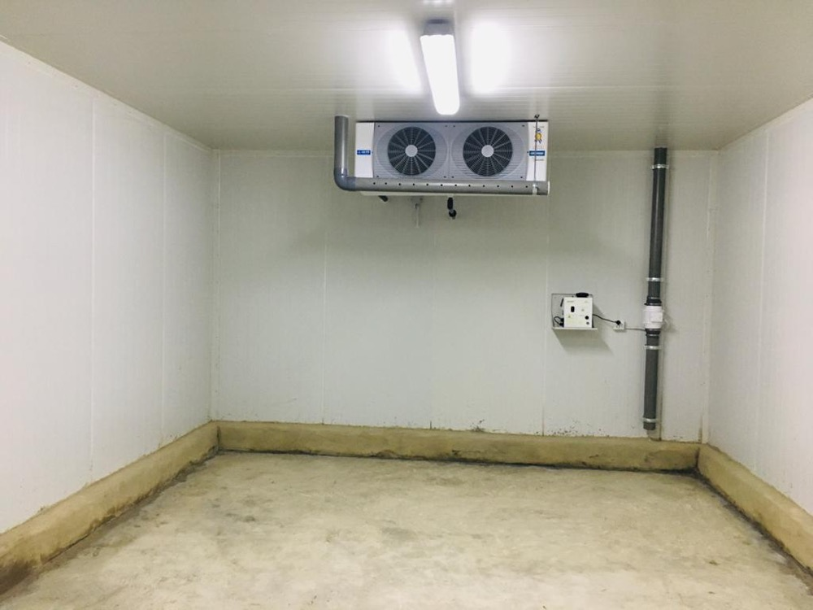
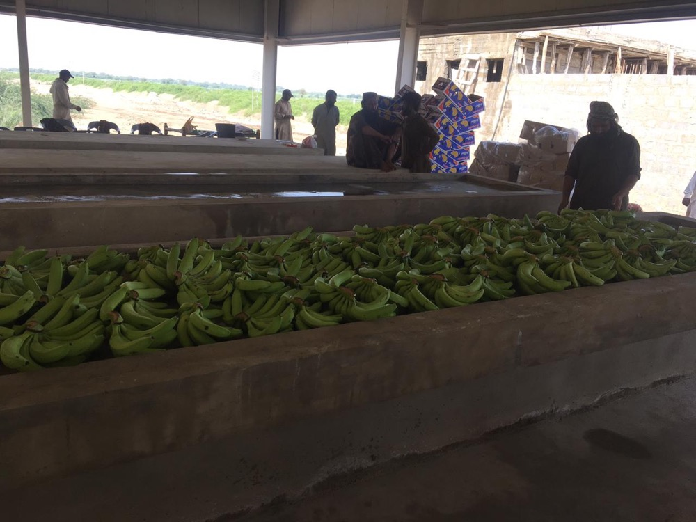
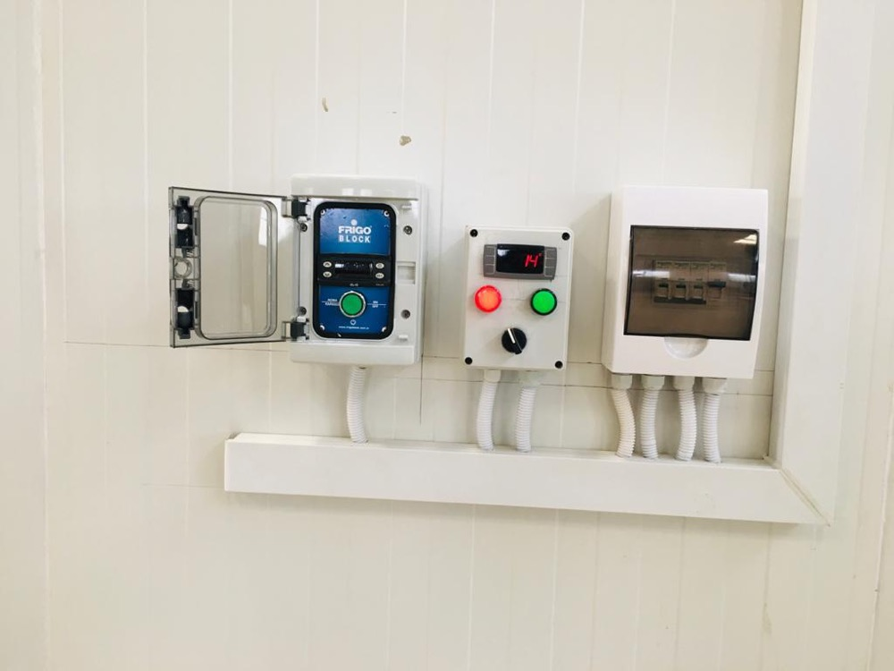
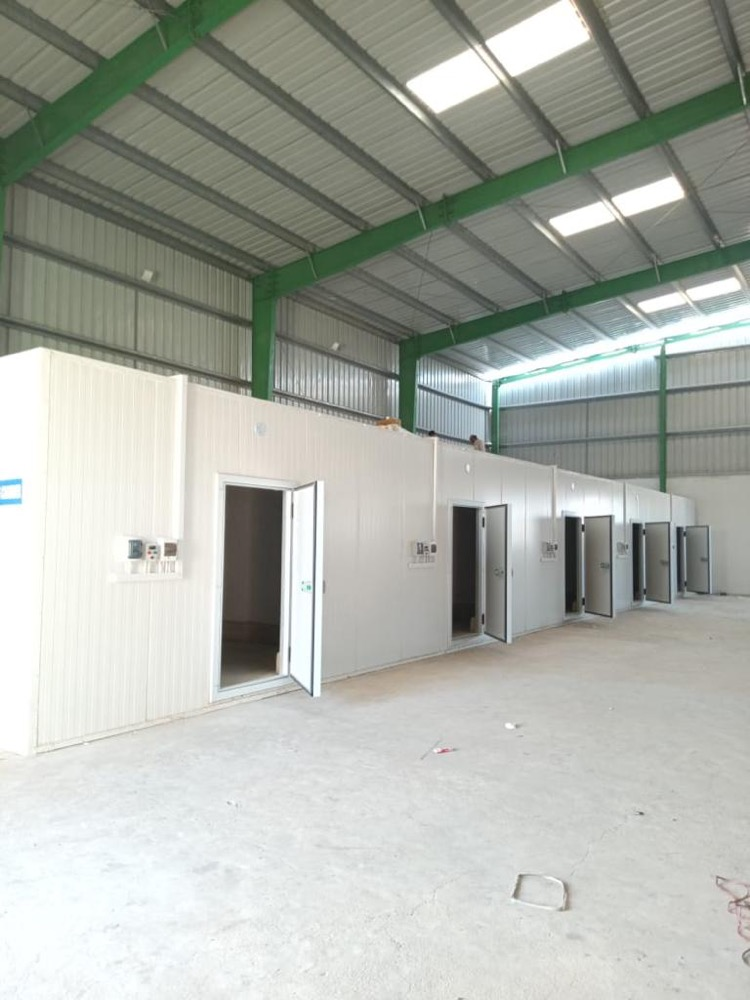
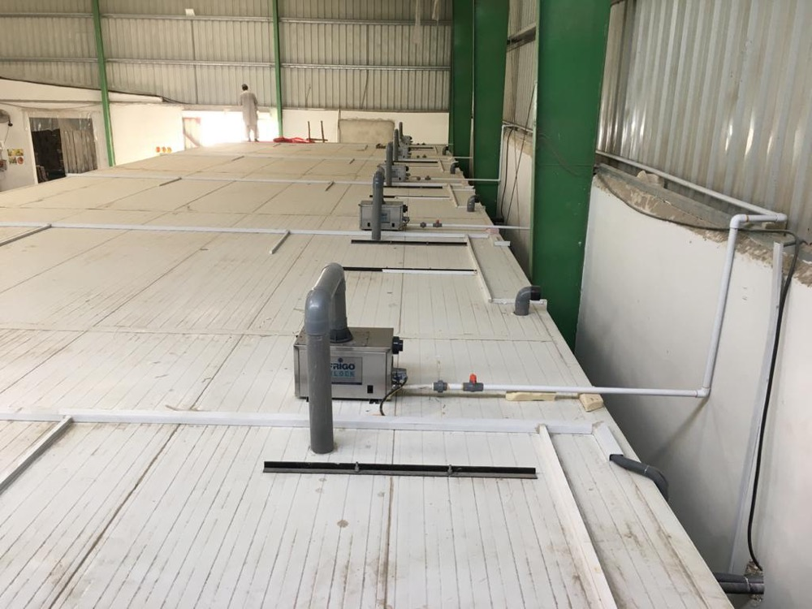
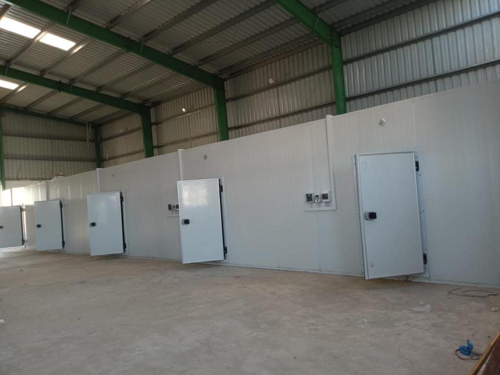

USAID Banana Ripening & Cold Storage Rooms, Sindh — agricultural post-harvest cold chain for farmer cooperatives
Izhar Foster designed and installed banana ripening rooms and cold storage chambers under a USAID-funded agricultural value-chain development programme in Sindh, Pakistan. PIR-clad ripening chambers with controlled ethylene, temperature, and humidity for the 4–6 day controlled ripening cycle that turns Sindh's banana harvest into consistent retail-grade fruit — recovering 20–40% of harvest value otherwise lost to uncontrolled ripening and post-harvest spoilage. Built for smallholder farmer cooperatives, with the same cold-chain engineering rigour Izhar Foster brings to Coca-Cola, Pepsi, and Pakistan's largest food and beverage majors.

Pakistan loses an estimated 30–40% of its annual fruit and vegetable harvest to post-harvest losses — much of it preventable with the right cold-chain infrastructure. The banana sector in Sindh has been one of the most visible cases. Sindh produces a substantial share of Pakistan's banana harvest from districts including Hyderabad, Tando Muhammad Khan, and Tando Allahyar, but smallholder cooperatives historically have had limited access to the controlled ripening rooms that turn green field bananas into the consistent yellow-stage retail fruit consumers buy.
The USAID-funded banana ripening cold-chain installation Izhar Foster delivered in Sindh changes that. Each ripening room is a fully PIR-clad, climate-controlled, ethylene-managed chamber sized for the cooperative-scale harvest volumes typical of the smallholder beneficiary base. The economics for the farmers are direct: better fruit quality, fewer rejected pallets at the wholesale market, premium pricing at retail, and a meaningful share of the harvest value preserved that would previously have been lost.
What banana ripening rooms actually do
Banana is a climacteric fruit — meaning it ripens after harvest, in response to its own ethylene production. Wild ripening on a Sindh farm or in a wholesale market gives uneven results: some fruit turns ripe and is sold at premium, some stays green, some over-ripens to brown, much is rejected. A controlled ripening room takes the variability out:
- Day 1 — pre-cool and gas. Green bananas arrive from the field, are loaded into the room, and the room is sealed. Temperature is brought to +14 to +16°C and ethylene is introduced at 600–1,000 ppm to initiate ripening synchronously across all the fruit.
- Days 2–3 — peak ripening. Temperature held at +14 to +16°C, humidity at 90–95% RH, ethylene ventilated, CO₂ scrubbed (high CO₂ inhibits ripening). The fruit converts starch to sugar, the peel develops yellow colour, the flesh softens.
- Days 4–5 — colour finishing. Temperature lowered slightly to +13 to +14°C to slow the ripening rate as the fruit reaches the desired colour stage. Cooperative timing decides when to release for retail.
- Days 5–6 — hold for distribution. Mature ripe fruit can be held briefly at +13°C to align with truck loading and retail delivery schedule. Beyond 6 days, fruit moves to retail.
The control system runs all of this automatically — temperature, humidity, ethylene injection, CO₂ scrubbing, and ventilation — with the cooperative operator setting the target ripening stage and date.
The engineering scope of a ripening room
A banana ripening room is more demanding than a conventional cold store. It needs:
- Tight temperature control at +13 to +16°C — within roughly ±1 K. Tighter than most chiller cold stores need.
- High humidity capability — 90–95% RH. Banana ripens too quickly and shrivels at lower humidity. Most cold stores never run this humid.
- Ethylene injection and management — controlled gas dosing on a setpoint, with ventilation to remove residue and manage CO₂.
- Air distribution — uniform air across the entire fruit load. Bananas pack densely and air channels can develop hot or cold spots that cause uneven ripening.
- Gas-tight envelope — to retain ethylene at the target concentration. PIR sandwich panels with sealed coves and gas-tight insulated doors deliver this.
- Refrigeration sized for sensible plus high latent — at 90%+ RH, the latent load contribution can equal or exceed the sensible. Refrigeration plant sizing must reflect this; a generic cold-store calculation will undersize.
Why Sindh is hard, and why a Pakistan-built solution is right
Sindh summer ambient runs 42–46°C in Hyderabad and the inland districts, with humidity that swings from low in winter to 70–90% in monsoon. The cold-chain plant must hold setpoint inside the ripening room while rejecting heat to the outdoor ambient — which means careful condenser sizing with a Pakistan-specific climate uplift, ammonia or HFC refrigerant choice, and a power architecture that survives Sindh's grid.
Izhar Foster sizes every ripening room and cold storage in Sindh against the local ASHRAE 0.4% design DB for the relevant district, with the +2 K Pakistan uplift baked in, and the MT 2.0%/K condenser ambient derate applied above 35°C. The result is a plant that holds setpoint through the hottest July afternoon — exactly when the seasonal harvest peaks.
The other reason a Pakistan-built solution is right: service support. A donor-funded project for smallholder farmer cooperatives needs equipment that can be serviced, maintained, and parts-replaced locally for the next 15–25 years. Imported turnkey ripening rooms shipped from Europe or India are challenging to maintain when a sensor fails or a compressor needs overhaul; Izhar Foster's 100+ engineers and Pakistan-resident parts inventory mean the cooperatives can keep the rooms running indefinitely.
The broader USAID-Pakistan agriculture cold-chain story
USAID has funded multiple cold-chain interventions in Pakistan over the past two decades, recognising that post-harvest losses are one of the highest-leverage problems in the country's agricultural economy. From the donor's perspective, every rupee invested in a banana ripening room or potato cold store recovers many rupees of lost crop value at the cooperative level — and the impact compounds over the life of the infrastructure.
The banana ripening rooms in Sindh sit alongside other cold-chain commitments Izhar Foster has delivered for the broader food and agricultural sector in Pakistan: controlled atmosphere stores for apples in KPK and dates in Sindh, fruit and vegetable cold storage for mango and citrus exporters, potato cold storage tuned to Punjab and KPK growing seasons, general banana ripening infrastructure, and halal-compliant meat and poultry cold storage for processors. Across the portfolio, the engineering principles converge: FireSafe PIR envelope, Bitzer-based refrigeration, Pakistan-tuned design, and a turnkey scope that runs from heat-load calculation through commissioning to multi-year service.
Photographs from the commissioned facility






Specification context — banana ripening room engineering
| Parameter | Banana ripening room |
|---|---|
| Room temperature | +13 to +16 °C, ±1 K |
| Relative humidity | 90–95 % |
| Ethylene concentration | 600–1,000 ppm at ripening initiation |
| CO₂ ceiling | ≤1% during ripening (high CO₂ inhibits ripening) |
| Ripening cycle | 4–6 days, controlled stepped programme |
| Envelope | FireSafe PIR sandwich panels, 100 mm core typical |
| Door | Insulated, gas-tight, multi-stage gasket |
| Refrigeration | HFC (R-404A or R-449A), Bitzer compressor |
| Evaporator | Ceiling-mounted dual-fan, LU-VE-class, hot-gas defrost |
| Air distribution | High-volume, low-velocity for uniform fruit cooling |
| Humidification | Wetted-coil or steam injection, RH-controlled |
| Ethylene system | Programmable injection valve + concentration sensor + ventilation control |
| Power | Single or three-phase, generator-backed |
| Lifespan | 15–25 years with routine service |
For agricultural cold-chain projects of any scale
Whether you are a smallholder cooperative looking at your first banana ripening room, an exporter planning a mango pre-cooling and ripening complex, a potato grower needing long-term cold storage, or a development organisation funding agricultural value-chain infrastructure — Izhar Foster has delivered the engineering at every scale. From single-chamber units for one cooperative to multi-zone industrial cold complexes for large agricultural exporters, the engineering staff and FireSafe PIR sandwich panel manufacturing capability are the same.
To scope a project, start by sharing your crop (banana, mango, potato, dates, citrus, kinnow), volume (tons per cycle or pallets), and location (city or district). For an indicative refrigeration sizing, run our cold room heat load calculator with your room dimensions and target setpoint. For a complete project quote, contact our team. Engineers respond within 24 hours.
Other agricultural and cold-chain projects in Pakistan.
How the USAID Sindh installation sits within Izhar Foster's portfolio of named cold-chain projects.
Coca-Cola TCCEC
High-bay drive-in pallet racking and ammonia-based finished-goods cold storage for Coca-Cola in Lahore.
02Pepsi · GujranwalaNaubahar Bottling Co.
PIR-clad bottling-plant cold storage and on-site quality-control laboratory environment for the Pepsi franchise in Gujranwala.
033PL · KarachiConnect Logistics
Multi-bay third-party cold-chain logistics warehouse with multiple loading docks and PIR roof-and-wall envelope.
04Lab · LahoreHaier Climate Test Lab
Climate-controlled environmental testing chambers built inside Haier's Lahore facility — a cold-storage discipline applied to electronics QC.
How much would your version cost?
See the cost breakdown for a banana ripening room or post-harvest cold-chain installation. Rough estimate only — exact cost will differ. ±20% indicative band, includes editable Izhar margin. Engineer validation required before quoting a customer.
Open the rough estimator →